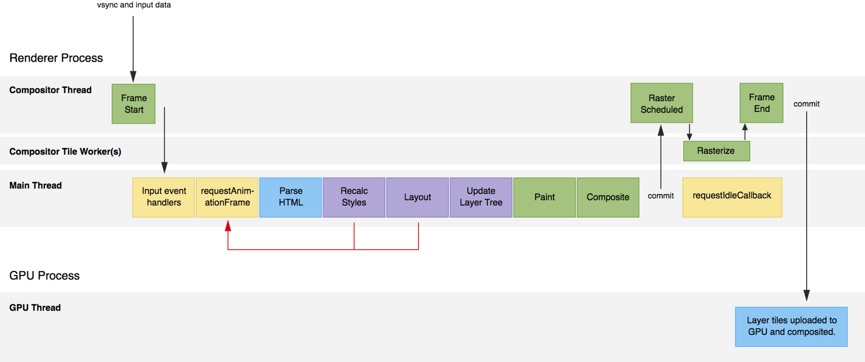

输入一个URL
总体来说分为以下几个过程:
- DNS解析
- 封装HTTP请求
- TCP连接
- IP层
- 服务器处理请求并返回响应报文
- 浏览器解析渲染页面
- 连接结束
1. DNS解析
首先对请求的域名进行DNS解析成一个IP地址。过程如下：
（1）将待解析的域名放在DNS请求报文中，以UDP用户数据报方式发给本地域名服务器。如果本地域名服务器查找到域名，就把对应的IP地址返回。如果本地域名服务器不能查找到域名，则由本地域名服务器接手查询
（2）本地域名服务器向根域名服务器的查询通常采用迭代查询。也就是根域名服务器告诉本地域名服务器需要向某个顶级域名服务器请求，然后本地域名服务器去请求顶级域名服务器
（3）本地域名服务器去请求顶级域名服务器，顶级域名服务器要么给出所要查询的ip地址，要么告诉本地域名服务器下一步应当向哪个权限域名服务器进行查询
（4）最终一步一步的本地域名服务器知道了ip地址，将结果返回给发起查询的主机。
（5）为了提高查询效率，在域名服务器中广泛使用了高速缓存。
2. 封装HTTP请求
发送一个HTTP请求，一个HTTP请求包括：状态行、请求头、请求体
http请求头有四种类型，分别是通用头部，请求头部，响应头部以及内容头部
content-type是属于内容头部
前端向后台传输的数据有几种类型：表单、字符串、json
通过Content-Type来告诉后台当前请求数据的类型，常见的媒体格式类型如下：
text/html ： HTML格式
text/plain ：纯文本格式
text/xml ： XML格式
image/gif ：gif图片格式
image/jpeg ：jpg图片格式
image/png：png图片格式
通过Content-Type来告诉后台前端传输的数据类型，常见的类型如下：
application/json ：传递的是一个json对象。
application/x-www-form-urlencoded ：发送表单
multipart/form-data ：需要在表单中进行文件上传时，就需要使用该格式。
HTTP请求头字段：cookie、connection、Content-Type、Host、If-Match、If-Modified-Since、If-None-Match
| Header | 解释 | 示例 |
| | | |
| :—-: | :—–: | :—-: |
| Accept | 指定客户端能够接收的内容类型 | Accept: text/plain, text/html,application/json |
| Accept-Charset | 浏览器可以接受的字符编码集。 | Accept-Charset: iso-8859-5 |
| Accept-Encoding | 指定浏览器可以支持的web服务器返回内容压缩编码类型。 | Accept-Encoding: compress, gzip |
| Accept-Language | 浏览器可接受的语言 | Accept-Language: en,zh |
| Accept-Ranges | 可以请求网页实体的一个或者多个子范围字段 | Accept-Ranges: bytes |
| Cache-Control | 指定请求和响应遵循的缓存机制 | Cache-Control: no-cache |
| Upgrade | 向服务器指定某种传输协议以便服务器进行转换（如果支持） | Upgrade: HTTP/2.0, SHTTP/1.3, IRC/6.9, RTA/x11 |
3. TCP连接
3.1 TCP的特性
TCP 提供一种面向连接的、可靠的字节流服务
在一个 TCP 连接中，仅有两方进行彼此通信。广播和多播不能用于 TCP
TCP 使用校验和，确认和重传机制来保证可靠传输。
校验和是一个端到端的校验和，由发送端计算，然后由接收端验证。其目的是为了发现TCP首部和数据在发送端到接收端之间发生的任何改动。如果接收方检测到校验和有差错，则TCP段会被直接丢弃。
确认和重传：当发送方发送的数据丢失或延迟，接收方迟迟没有回应确认时，发送方会再发送一遍。
TCP使用校验和，但是有时候就是会出现数据错误却通过校验值检验的奇葩情况。因此TCP不一定可靠。有条件的话可以在通信协议中增加自己的校验机制。
TCP 给数据分节进行排序，并使用累积确认保证数据的顺序不变和非重复
TCP 使用滑动窗口机制来实现流量控制，通过动态改变窗口的大小进行拥塞控制。所谓流量控制就是让发送方的发送速率不要太快，要让接收方来得及接收。防止过多的数据注入到网络中，这样可以使网络中的路由器或链路不致过载。
慢开始( slow-start )、拥塞避免( congestion avoidance )、快重传( fast retransmit )和快恢复( fast recovery )。
3.2 TCP三次握手
ACK是确认包，SYN是同步位
第一次客户端发送SYN=1，seq=x，发送完毕，客户端进入 SYN_SEND 状态。
第二次服务端发送SYN=1，ACK=1，ack=x+1，seq=y，发送完毕，服务端进入 SYN_RCVD 状态。
第三次客户端发送ACK=1，seq=x+1,ack=y+1，发送完毕，客户端进入ESTABLISHED状态。
进行三次握手的原因是防止已失效的链接2请求报文又传回了服务器，如果客户端发送连接请求给服务端，但是请求延误，客户端认为请求失败，可能又会发起一次新的请求。过了一会儿刚才延误的请求报文发送到了服务器，服务器发送响应包，如果只有两次握手，则此时服务器认为连接建立完成，分配好了资源和客户端通信，但客户端在之前已经认为第一次请求失败，便不会理会服务端发送的响应包。因此可以看出只有两次握手的话，可能会浪费服务器资源。
3.3 TCP四次挥手
FIN是连接终止位
第一次客户端发送FIN=1，seq=u，客户端进入FIN-WAIT-1状态
第二次服务端发送ACK=1，seq=v，ack=u+1，服务端进入CLOSE_WAIT状态。此时客户端到服务端的连接释放了，此时TCP处于半关闭的状态。也就是客户端不会发送数据给服务端了。
第三次服务端发送FIN=1，ACK=1，seq=w，ack=u+1，客户端进入FIN_WAIT_2阶段。
第四次客户端发送ACK=1，seq=u+1,ack=w+1,客户端进入TIME_WAIT状态，经过TIME_WAIT设置的等待时间2MSL后，客户端才进入CLOSED状态。服务端收到后进入CLOSE状态
3.4 UDP
UDP 是一个简单的传输层协议。和 TCP 相比，UDP 有下面几个显著特性：
UDP 缺乏可靠性。UDP 本身不提供确认，序列号，超时重传等机制。UDP 数据报可能在网络中被复制，被重新排序。即 UDP 不保证数据报会到达其最终目的地，也不保证各个数据报的先后顺序，也不保证每个数据报只到达一次。
UDP 是无连接的。UDP 客户和服务器之前不必存在长期的关系。UDP 发送数据报之前也不需要经过握手创建连接的过程。
UDP 支持多播和广播。
4. IP层
建立起TCP连接后，请求也被传送到客户端主机的网络层。网络层实现的最重要的功能是路由选择，简单地说，就是怎么把这一个IP数据报从客户端主机出发，通过网络中的若干个路由器，到达目的主机。
路由选择机制的基础是在每一台主机和路由器里都存储着一张路由表。路由表的每一项包含了目的主机IP地址、下一跳路由器（或主机）的IP地址。
5. 服务器处理请求并返回HTTP报文
目标主机收到了请求后，自底向上地对该请求进行处理。链路层把数据报传给网络层，网路层将TCP数据段通过对应的Socket传给应用程序。应用程序处理请求后产生一个应答的HTTP报文，又经过了一层层的封装、一跳跳的传输到达了源主机。
6. 浏览器解析渲染页面
首先需要了解到浏览器是多进程，包括Browser进程（1个）、GPU进程（1个）、Render进程（多个）。
Browser进程：UI线程（创建tab页面，用户操作选择tab页）、IO线程、File线程、数据库线程
Render进程：主要的那个进程，每个tab一个。负责执行JS和页面渲染。包含3个线程：Compositor Thread、Tile Worker、Main thread，后文会介绍这三个线程。
GPU进程：是和GPU打交道的进程，负责将Renderer进程中绘制好的位图作为纹理上传至GPU，并调用GPU的相关方法把纹理draw到屏幕上。
打开浏览器Browser进程启动，调用Browser进程创建一个Tab，用户输入url回车后，将请求结果传递给Render进程，Render进程将结果交给main线程，main线程解析并开始解析渲染网页。
6.1 生成render tree
首先将html解析成DOM树，并且处理avaScript给元素设置的样式而已。Recalculate Style会计算Render树（渲染树）,然后从根节点开始进行页面渲染，将CSS附加到DOM上的过程。
将CSS解析成CSS对象模型（CSSOM），对每个 DOM 元素匹配对应的 CSS 样式。这一步结束之后，就确定了每个 DOM 元素上该应用什么 CSS 样式规则，DOM树和CSSOM两者结合生成render tree。在解析过程中如果遇到js标签就会下载解析执行。
6.2 layout阶段
render tree结束之后进入layout阶段。在上一步确定了每个 DOM 元素的样式规则，这一步就是具体计算每个 DOM 元素最终在屏幕上显示的大小和位置。
6.3 paint阶段
- Render Object
layout阶段之后是paint阶段。paint阶段有一个Render Object的概念，Render Object和DOM节点一一对应。Render Object上实现了将其对应的DOM节点绘制进位图的方法，负责绘制这个DOM节点的可见内容如背景、边框、文字内容等等。同时Render Object也是存放在一个树形结构中的。
位图：浏览器可以用位图来记录他想在某个区域绘制的内容。使用一个二维数组，数组中的元素记录这个图片中的每一个像素的具体颜色。然后进行绘制。 - Render Layer
但仅仅只有Render Object还是不够的，因为浏览器还存在层叠上下文，就是元素间的相互覆盖关系。因此还有一个Render Layer的概念。当然Render Layer的出现并不是简单因为层叠上下文等，比如opacity小于1、比如存在mask等等需要先绘制好内容再对绘制出来的内容做一些统一处理的css效果。
总之就是有层叠、半透明等等情况的元素（具体哪些情况请参考无线性能优化：Composite）就会从Render Object提升为Render Layer。不提升为Render Layer的Render Object从属于其父级元素中最近的那个Render Layer。当然根元素HTML自己要提升为Render Layer。
因此现在Render Object树就变成了Render Layer树，每个Render Layer又包含了属于自己layer的Render Object。
Render Layer 树决定了网页绘制的层次顺序，而从属于 Render Layer 的 Render Object 决定了这个 Render Layer 的内容，所有的 Render Layer 和 Render Object 一起就决定了网页在屏幕上最终呈现出来的内容。 - Graphics Layers(又称Compositing Layer)和Graphics Context
但是事情还没有结束还有Graphics Layers和Graphics Context。
上面的过程可以搞定绘制过程。但是浏览器里面经常有动画、video、canvas、3d的css等东西。这意味着页面在有这些元素时，页面显示会经常变动，也就意味着位图会经常变动。每秒60帧的动效里，每次变动都重绘整个位图是很恐怖的性能开销。
因此浏览器为了优化这一过程。引出了Graphics Layers(又称Compositing Layer)和Graphics Context，前者就是我们常说的合成层(Compositing Layer)。
Render Layer提升为Graphics Layer的情况：
- 3D 或透视变换(perspective、transform、translate3d、translateZ) CSS 属性
- 使用加速视频解码的 元素
- 拥有 3D (WebGL) 上下文或加速的 2D 上下文的 元素
- 混合插件(如 Flash)
- 对 opacity、transform、fliter、backdropfilter 应用了 animation 或者 transition（需要是 active 的 animation 或者 transition，当 animation 或者 transition 效果未开始或结束后，提升合成层也会失效）
- will-change 设置为 opacity、transform、top、left、bottom、right（其中 top、left 等需要设置明确的定位属性，如 relative 等）
- 拥有加速 CSS 过滤器的元素
- 元素有一个 z-index 较低且包含一个复合层的兄弟元素(换句话说就是该元素在复合层上面渲染)
3D transform、will-change设置为 opacity、transform等 以及 包含opacity、transform的CSS过渡和动画 这3个经常遇到的提升合成层的情况，更多的参见http://taobaofed.org/blog/2016/04/25/performance-composite/
每个合成层Graphics Layer 都拥有一个 Graphics Context，Graphics Context 会为该Layer开辟一段位图，也就意味着每个Graphics Layer都拥有一个位图。Graphics Layer负责将自己的Render Layer及其子代所包含的Render Object绘制到位图里。然后将位图作为纹理交给GPU。
6.4 composite阶段
现在GPU需要对多层纹理进行合成(composite)，而且GPU对于这个过程是底层硬件加速的，性能很好。最终，纹理合成为一幅内容最终draw到屏幕上。
所以在元素存在transform、opacity等属性的css animation或者css transition时，动画处理会很高效，这些属性在动画中不需要重绘，只需要重新合成即可。
如果是使用js修改DOM元素的样式，那么先计算样式，然后layout(重排) -> paint(重绘) -> composite(合成)
7. Renderer进程的三个线程
- Compositor Thread
这个线程既负责接收浏览器传来的垂直同步信号(Vsync，水平同步表示画出一行屏幕线，垂直同步就表示从屏幕顶部到底部的绘制已经完成，指示着前一帧的结束，和新一帧的开始)， 也负责接收OS传来的用户交互，比如滚动、输入、点击、鼠标移动等等。
如果可能，Compositor Thread会直接负责处理这些输入，然后转换为对layer的位移和处理，并将新的帧直接commit到GPU Thread，从而直接输出新的页面。否则，比如你在滚动、输入事件等等上注册了回调，又或者当前页面中有动画等情况，那么这个时候Compositor Thread便会唤醒Main Thread，让后者去执行JS、完成重绘、重排等过程，产出新的纹理，然后Compositor Thread再进行相关纹理的commit至GPU Thread，完成输出。 - Main Thread
chrome devtools的Timeline里Main那一栏显示的内容就是Main Thread完成的相关任务：某段JS的执行、Recalculate、 Layout Tree、Paint、Composite Layers等等。是浏览器执行我们都知道和喜爱的任务的地方：JavaScript，样式，布局和绘画。 - Compositor Tile Worker(s)
可能有一个或多个线程，比如PC端的chrome是2个或4个，安卓和safari为1个或2个不等。是由Compositor Thread创建的，专门用来处理tile的Rasterization（前文说过的光栅化）。

8. 重排 Layout、强制重排 Force Layout
在正常情况下，修改了一个影响元素布局信息的CSS样式，比如width、height、left、top等（transform除外），那么浏览器会将当前的Layout标记为dirty，这会使得浏览器在下一帧执行上述11个步骤的时候执行Layout。因为元素的位置信息变了，将可能会导致整个网页其他元素的位置情况都发生改变，所以需要执行Layout全局重新计算每个元素的位置。
需要注意到，浏览器是在下一帧、下一次渲染的时候才重排。并不是JS执行完这一行改变样式的语句之后立即重排，所以你可以在JS语句里写100行改CSS的语句，但是只会在下一帧的时候重排一次。
如果你在当前Layout被标记为dirty的情况下，访问了offsetTop、scrollHeight等属性，那么，浏览器会立即重新Layout，计算出此时元素正确的位置信息，以保证你在JS里获取到的offsetTop、scrollHeight等是正确的。
会触发重排的属性和方法:
比如clientWidth、offsetWidth、scrollWidth、getBoundingClientRect等
9. 进程和线程
- 进程和线程的本质
进程是具有一定独立功能的程序关于某个数据集合上的一次运行活动, 进程是系统进行资源分配和调度的一个独立单位.
线程是进程的一个实体,是CPU调度和分派的基本单位, 它是比进程更小的能独立运行的基本单位. - 资源管理方式
进程和线程的主要差别在于它们是不同的操作系统资源管理方式。进程有独立的地址空间，一个进程崩溃后，在保护模式下不会对其它进程产生影响。而线程只是一个进程中的不同执行路径，它可与同属一个进程的其他的线程共享进程所拥有的资源，但线程之间没有单独的地址空间，一个线程死掉就等于整个进程死掉 - 进程和线程的切换
线程上下文切换和进程上下文切换一个最主要的区别是线程的切换使用的内存空间依然是相同的；但是进程切换是不同的，所以进程切换时，耗费资源较大。
参考：
https://juejin.im/entry/59f010fdf265da4315231caa
http://taobaofed.org/blog/2016/04/25/performance-composite/